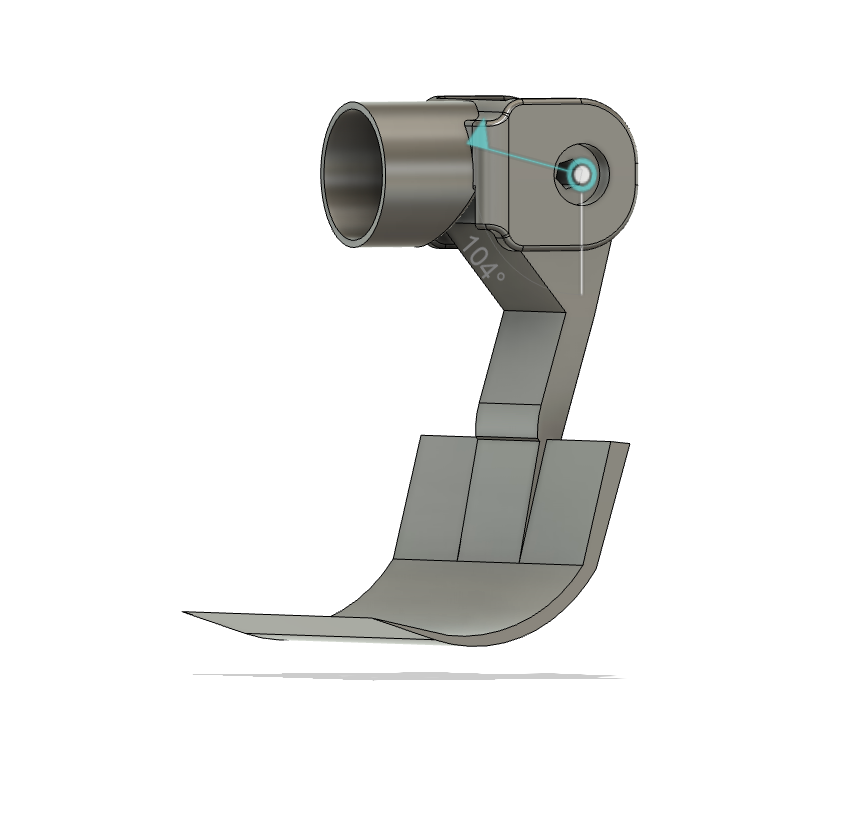
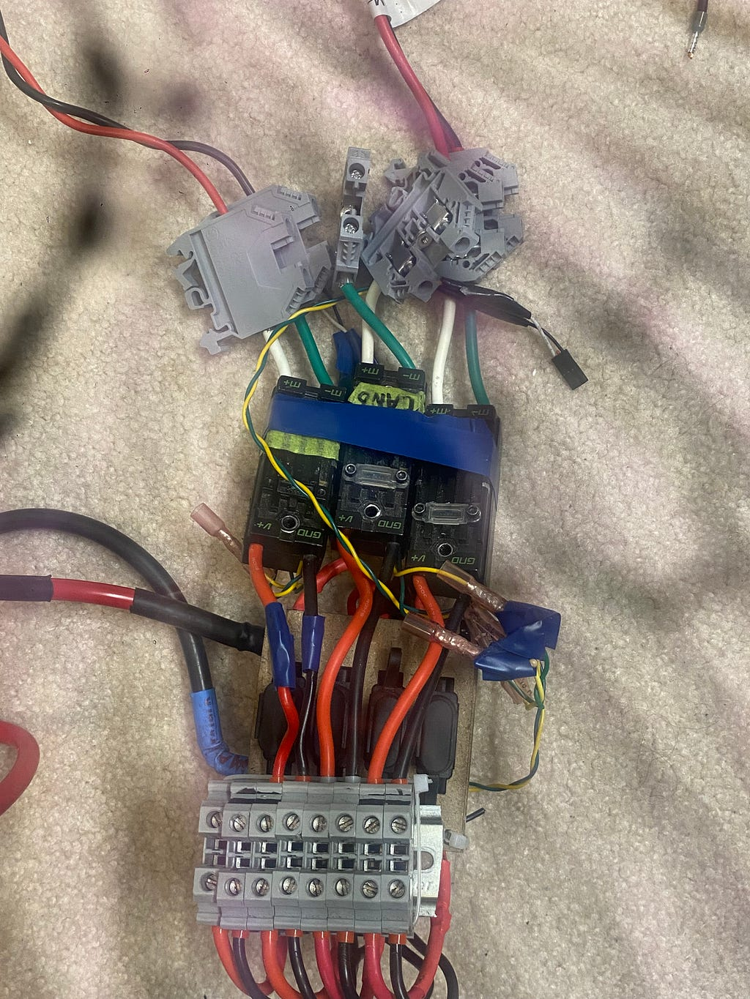
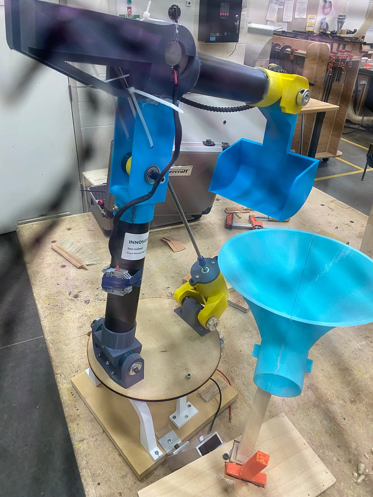
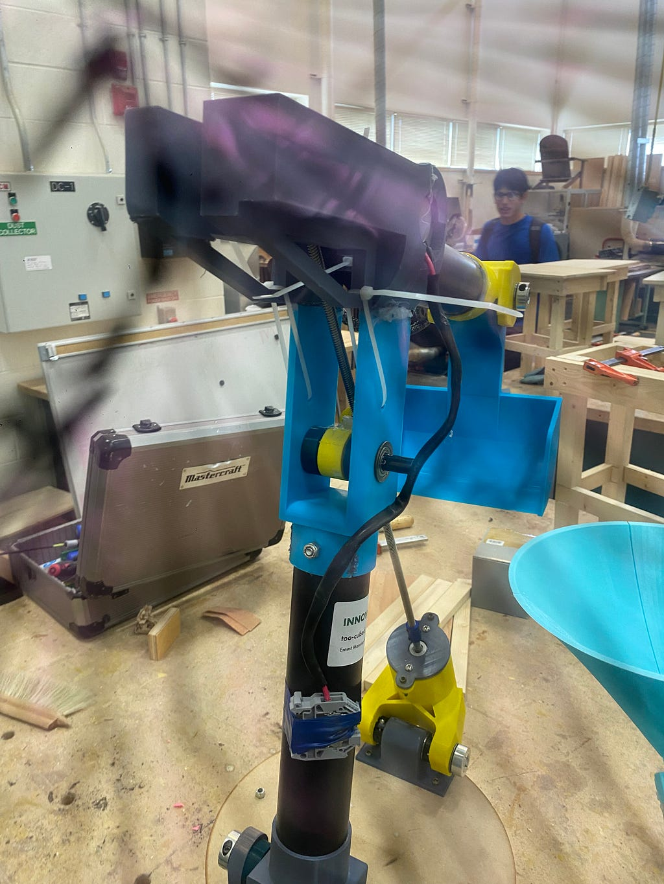
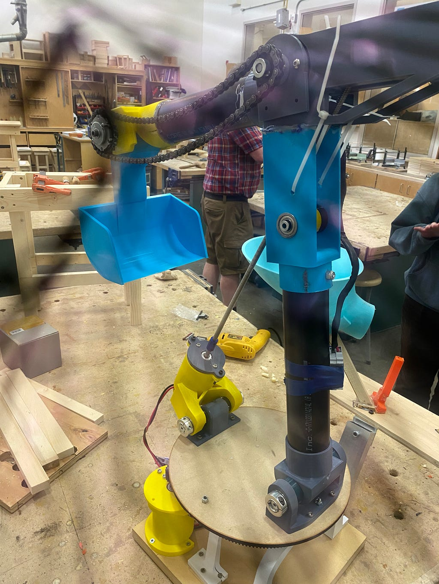

Jun 2024
Creating a Linearly Actuated Robot Arm Pt.2
Can a high school team build a working robot arm with a small budget, old parts and 4 weeks? I got the answer and it's more complicated than yes or no…
End Effector :
The biggest addition from last time is the end effector. The end effector is a device that you can attach to the “wrist” or end of the robot which allows the robot to interact with its environment. In our case, it is a scoop to pick up balls from a bucket.

The end effector is driven by a chain sprocket which is connected to a Mini CIM motor.
Electrical :

Now this electrical job is not very pretty, but it works :) Threw this together in a rush in the last few days before the comp. As I mentioned in the previous article, I'm using Talon SRXs as motor controllers to control the CIMs. For those of you who aren't aware of what a motor control is, it's sorta like the motor’s boss. The motor does whatever the motor controller says.
Fixes:
Linear Actuator:
As I mentioned in the previous article, the robot arm was experiencing lots of violent vibrations due to the ready rod not being in line with the motor shaft. I tried a few different things to fix this issue.
- Originally, I was using a 7/16th rod and tried to couple it to an 8mm shaft. I first used a normal coupler, the issue with this is that when I machined the inside of it to fix the 7/16th rod, I could never get it right. It was always just a little bigger than I needed.
- Next, I tried to thread the inside of the coupler to 7/16. Now this should theoretically work but there was another variable I did not take into account. The angle of how I threaded into it. Now an easy fix to this is just to put the tap on the end of the drill chuck on a lathe and spin it by hand. Unfortunately, I didn't have access to a drill chuck for our lathe. So I took the risk and free-handed it… It didn't work but I did learn that I won't be becoming a surgeon anytime soon.
- At this point, I was trying to look for anything that would work. I started to look into 3d printer actuators and turns out that instead of going through all that hassle I could just use a ready rod from a 3d printer. It wouldn't be 7/16ths, instead, it's T8 8mm, which fits perfectly onto a normal 8mm to 8mm coupler.
After this, the arm was essentially fully assembled. Here are some flicks (try to ignore the cracks in my camera):



Yes, I know that chain isn’t tensioned 😔 I tensioned it but didn’t get a pic of it.
Here is a GIF of it working:

So how did the comp go…
Unfortunately, the robot arm did NOT work during the comp. The reason was that we controlled the arm using Bluetooth, and when we were in the stadium, there were so many signals we could not connect to the robot. This was really unfortunate as it was working just a few hours before but it is what it is. I learned a very valuable lesson, HARD WIRE EVERYTHING. Regardless, our team still turnt up for the mystery challenges and placed Silver.
Overall, it was a lot of fun and it was truly the journey that is more enjoyable than the destination. I definitely want to make a better version of this robot arm in the near future. Thanks for following me on my journey tho :)